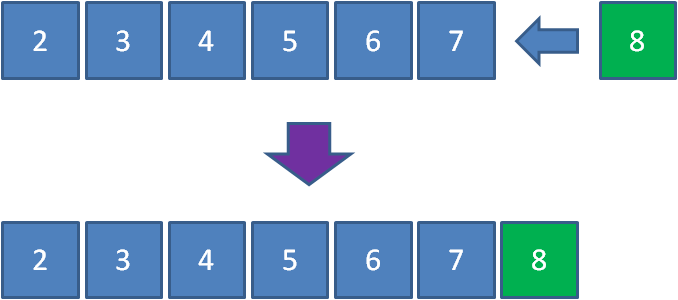
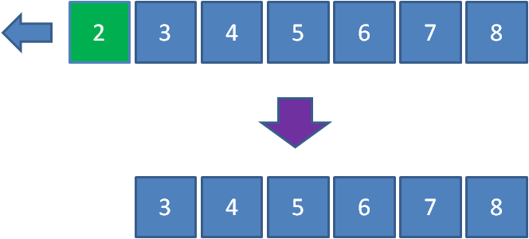
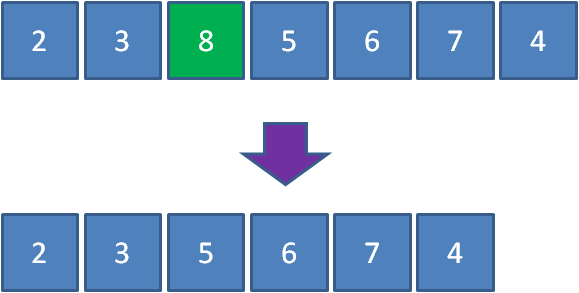
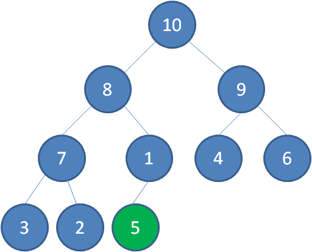
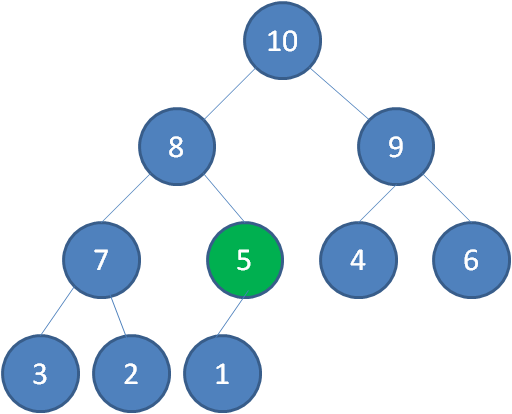
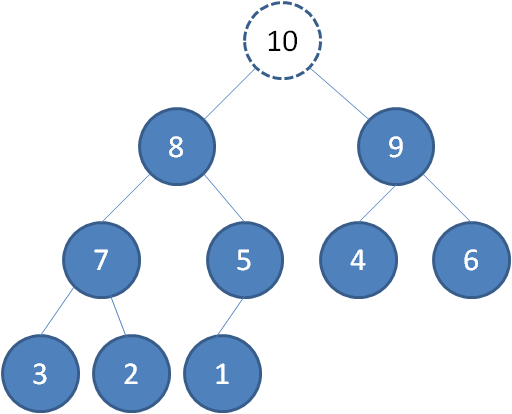
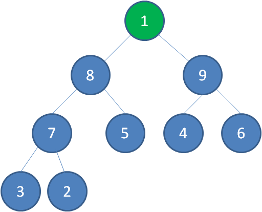
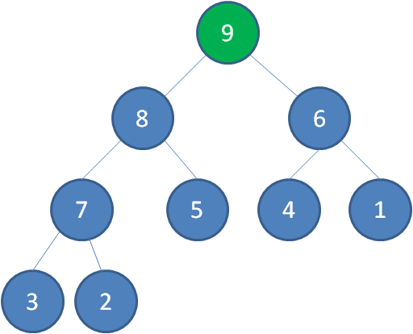

这一次，我们来讲一讲二叉堆的另外一个应用：优先队列
队列的特点是什么？
聪明的小伙伴们都知道，是先进先出（FIFO）。
入队列：

出队列：

那么，优先队列又是什么样子呢？
优先队列不再遵循先入先出的原则，而是分为两种情况：
最大优先队列，无论入队顺序，当前最大的元素优先出队。
最小优先队列，无论入队顺序，当前最小的元素优先出队。
比如有一个最大优先队列，它的最大元素是8，那么虽然元素8并不是队首元素，但出队的时候仍然让元素8首先出队：

要满足以上需求，利用线性数据结构并非不能实现，但是时间复杂度较高，最坏时间复杂度O（n），并不是最理想的方式。
至于为什么最坏时间复杂度是O（n），大家可以思考下。
让我们回顾一下二叉堆的特性：
因此，我们可以用最大堆来实现最大优先队列，每一次入队操作就是堆的插入操作，每一次出队操作就是删除堆顶节点。
入队操作：


出队操作：



public class PriorityQueue {
private int[] array;
private int size;
public PriorityQueue(){
//队列初始长度32
array = new int[32];
}
/**
* 入队
* @param key 入队元素
*/
private void enQueue(int key) {
//队列长度超出范围，扩容
if(size >= array.length){
resize();
}
array[size++] = key;
upAdjust();
}
/**
* 出队
*/
private int deQueue() throws Exception {
if(size <= 0){
throw new Exception("the queue is empty !");
}
//获取堆顶元素
int head = array[0];
//最后一个元素移动到堆顶
array[0] = array[--size];
downAdjust();
return head;
}
/**
* 上浮调整
*/
private void upAdjust() {
int childIndex = size-1;
int parentIndex = childIndex/2;
// temp保存插入的叶子节点值，用于最后的赋值
int temp = array[childIndex];
while (childIndex > 0 && temp > array[parentIndex])
{
//无需真正交换，单向赋值即可
array[childIndex] = array[parentIndex];
childIndex = parentIndex;
parentIndex = parentIndex / 2;
}
array[childIndex] = temp;
}
/**
* 下沉调整
*/
private void downAdjust() {
// temp保存父节点值，用于最后的赋值
int parentIndex = 0;
int temp = array[parentIndex];
int childIndex = 1;
while (childIndex < size) {
// 如果有右孩子，且右孩子大于左孩子的值，则定位到右孩子
if (childIndex + 1 < size && array[childIndex + 1] > array[childIndex]) {
childIndex++;
}
// 如果父节点大于任何一个孩子的值，直接跳出
if (temp >= array[childIndex])
break;
//无需真正交换，单向赋值即可
array[parentIndex] = array[childIndex];
parentIndex = childIndex;
childIndex = 2 * childIndex + 1;
}
array[parentIndex] = temp;
}
/**
* 下沉调整
*/
private void resize() {
//队列容量翻倍
int newSize = this.size * 2;
this.array = Arrays.copyOf(this.array, newSize);
}
public static void main(String[] args) throws Exception {
PriorityQueue priorityQueue = new PriorityQueue();
priorityQueue.enQueue(3);
priorityQueue.enQueue(5);
priorityQueue.enQueue(10);
priorityQueue.enQueue(2);
priorityQueue.enQueue(7);
System.out.println("出队元素：" + priorityQueue.deQueue());
System.out.println("出队元素：" + priorityQueue.deQueue());
}
}代码中采用数组来存储二叉堆的元素，因此当元素超过数组范围的时候，需要进行resize来扩大数组长度。